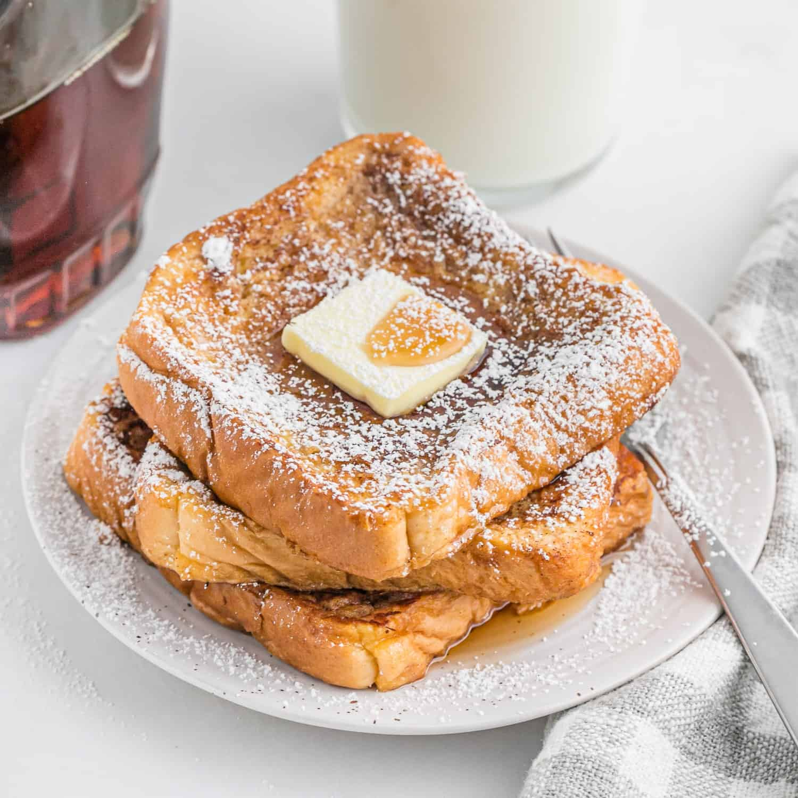

Home
French Toast

Description
French toast is a dish that consists of slice bread soaked eggs and milk. The bread is then pan-fried. Toppings typically consist of cinnamon and syrup.
Ingredients
- 4 eggs
- 1 cup milk
- 1 tablespoon sugar
- 2 teaspoons vanilla extract
- 1/2 teaspoon ground cinnamon
- pinch of salt
- bread
- butter
Steps
- In mixing bowl, whisk together the eggs, milk, sugar, vanilla, cinnamon, and salt.
- Pour mixture into shallow glass baking dish.
- Put pan on stove voer medium heat, melt 1-2 teaspoons of butter.
- For each piece, dip it in mixture for 3 seconds per side.
- Place piece on pan and cook for 3-4 minutes per side until golden brown.